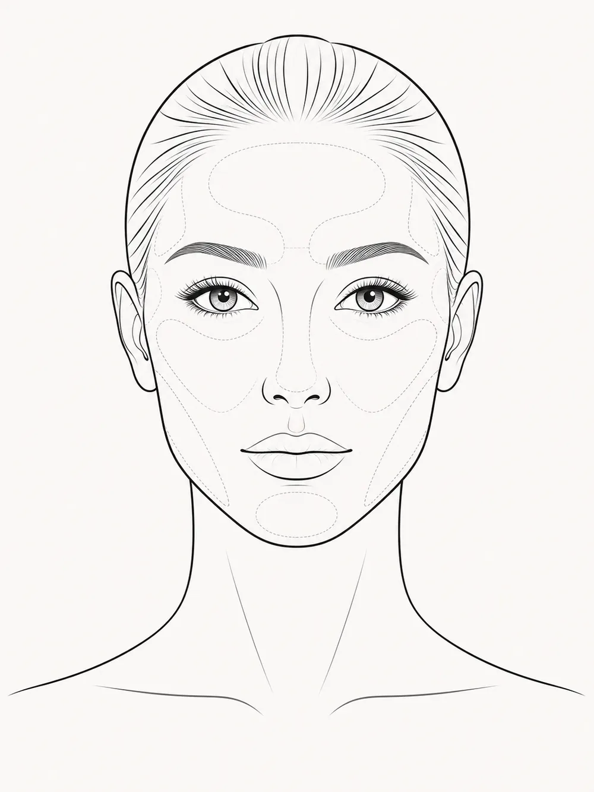

Softens Expression Related Lines
Neurotoxins may help soften the appearance of lines caused by repeated facial movement.
Mobile Botox and Neurotoxin Treatments in New Hampshire
Elite VitaMed offers Botox and neurotoxin treatments performed by a Nurse Practitioner and certified injector, with the privacy and convenience of mobile or in home concierge appointments.
Neurotoxin treatments can help soften the appearance of expression related lines, support facial balance, and create a more refreshed look when performed with a thoughtful, personalized approach.
Performed by a Nurse Practitioner and certified injector.
What It Is
Botox is one of the most well known names for a category of injectable treatments often called neurotoxins or neuromodulators. These treatments are used to temporarily relax targeted muscles that contribute to certain facial lines, expression related wrinkles, and muscle related concerns.
Your provider evaluates your goals, facial movement, anatomy, treatment history, and comfort level before recommending a plan. The goal is to help you look refreshed and natural, not frozen or overdone.
Who It Helps
Final candidacy is always determined by provider evaluation.
Benefits
Neurotoxins may help soften the appearance of lines caused by repeated facial movement.
When performed thoughtfully, treatment can help you look more rested and refreshed without changing your natural features.
Certain treatments may be used as part of a broader facial balancing plan for the lower face, jawline, chin, and neck.
Appointments are typically efficient, making them a convenient option for clients with busy schedules.
Your plan is based on your facial movement, anatomy, comfort level, and desired outcome.
Botox and Neurotoxin Treatment Map
See common areas where Botox or neurotoxins may be used to soften expression lines, support facial balance, and address muscle related concerns.
Unit ranges are educational estimates only. Actual units vary based on anatomy, muscle strength, treatment goals, product used, prior treatment history, and provider evaluation. Some treatment areas may be considered off label. Final treatment recommendations and dosing are determined by the provider.

Select a gold marker to explore an area. Hyperhidrosis may also be discussed as a specialty neurotoxin treatment.
This educational map applies to male and female clients. Actual treatment areas and amounts vary by individual anatomy, muscle strength, goals, and provider evaluation.
Educational Guide
Click a point on the face map to learn more about common Botox and neurotoxin treatment areas, what they may help with, and why provider evaluation matters.
Estimated unit ranges are provided for educational purposes only. Actual units vary by client and depend on anatomy, muscle strength, treatment goals, product used, prior treatment history, and provider evaluation. Some treatment areas may be considered off label. Final treatment areas and units are determined by the provider.
Treatment Areas
Not every client is a candidate for every area, and some uses may be considered off label. Your provider will determine what is appropriate during consultation.
Supports a more refined appearance along the jawline and neck.
Focuses on vertical bands caused by platysma muscle activity.
May be considered when lower-face width is related to muscle activity.
May be discussed for jawline slimming, jaw tension, or clenching concerns.
May be discussed for muscle related jaw tension or grinding concerns.
May be considered as part of a lower-face balancing plan.
May help soften texture related to mentalis muscle activity.
Ideal Candidates
You may be a good candidate for Botox or neurotoxin treatment if you are looking for a non surgical option to soften expression related lines, support facial balance, or address muscle related concerns in the face, jawline, or neck.
Final candidacy is always confirmed by the provider before treatment.
What To Expect
Most clients are able to return to normal daily activities after treatment, but temporary redness, swelling, tenderness, or minor bruising may occur. Results develop gradually and timing varies by person, product, treatment area, and individual response.
Step 1
Your provider reviews your goals, treatment history, facial movement, anatomy, and concerns.
Step 2
Appropriate treatment areas, expected outcome, limitations, and aftercare are explained.
Step 3
Small amounts of neurotoxin are injected into specific muscles based on your plan.
Step 4
You receive instructions and guidance on what to expect after treatment.
Step 5
Recommendations depend on the area treated, your goals, and provider guidance.
Downtime
Most clients are able to return to normal daily activities after neurotoxin treatment, but temporary redness, swelling, tenderness, or minor bruising at the injection site may occur.
Your provider will give you specific aftercare instructions. Results are not immediate. Neurotoxin effects typically develop gradually, and timing can vary by person, product, treatment area, and individual response.
Results
Botox and neurotoxin treatments are designed to create a temporary softening effect in treated areas. The goal is not to erase every line or create a frozen look. The goal is to support a refreshed, natural looking result that fits your facial movement and goals.
Results depend on the area treated, muscle strength, anatomy, previous treatment history, dose and placement, and your body's individual response. Individual results vary.
Treatment Comparison
Best for expression related lines, muscle activity, jawline or lower face muscle concerns, and certain facial balancing goals.
Best for volume, shape, contour, lip enhancement, cheek support, chin projection, jawline definition, under eye concerns, and facial balancing.
Best for clients interested in gradual collagen support and natural looking volume improvement over time.
Best for clients who may be interested in subtle lifting or skin support without surgery, depending on candidacy.
Best for clients who want a more complete treatment plan instead of treating one isolated area.
Not sure which option fits your goals? Start with the Injectable Treatment Assessment or request a consultation.
Start Injectable AssessmentSafety
Botox and neurotoxin treatments should always be performed by a qualified provider with appropriate training and product knowledge. Before treatment, your provider reviews your goals, medical history, treatment history, current concerns, and factors that may affect candidacy.
Tell your provider if you are pregnant, breastfeeding, have a history of neuromuscular conditions, have had previous reactions to neurotoxins, are taking medications that may affect treatment, or have health concerns that should be reviewed first. Some treatment areas or uses may be considered off label.
This page is for educational purposes only and does not replace medical advice, diagnosis, consultation, or provider evaluation. Final treatment recommendations depend on your individual goals, anatomy, health history, and what is appropriate for you.
Your Provider
Elite VitaMed takes a provider led approach to aesthetic and wellness care. Your Botox or neurotoxin treatment is performed by a Nurse Practitioner and certified injector who understands the importance of facial anatomy, natural looking results, safety, and personalized treatment planning.
New Hampshire Concierge Aesthetic Care
Elite VitaMed offers mobile Botox and neurotoxin treatments in New Hampshire and surrounding areas. This concierge model allows clients to receive premium aesthetic care in a private, comfortable setting while still being treated by a qualified provider.
Whether you are interested in a Nefertiti Lift, neck bands, jawline slimming, masseter Botox, TMJ and teeth grinding support, downturned smile, chin dimpling, or a full injectable consultation, Elite VitaMed helps you choose the right next step with provider led guidance.
Related Treatments
Frequently Asked Questions
Botox is a brand name commonly associated with a broader category of injectable treatments called neurotoxins or neuromodulators. These treatments are used to temporarily relax targeted muscles. Your provider can explain which product is appropriate for your goals.
Neurotoxins may be used for areas such as forehead lines, frown lines, crow's feet, neck bands, chin dimpling, jawline concerns, masseter muscles, downturned smile, and other facial movement related concerns. Final treatment areas are determined after provider evaluation.
A Nefertiti Lift is a neurotoxin treatment focused on the lower face, jawline, and neck area. It may be discussed for clients who want a more refined appearance along the jawline and neck.
Neurotoxin treatment may be discussed for jaw tension, clenching, teeth grinding, or TMJ related concerns. A provider evaluation is needed to determine whether this is appropriate.
Masseter Botox targets the masseter muscles in the jaw. It may be considered for jawline slimming, jaw tension, or clenching related concerns, depending on the client's anatomy and goals.
Most clients describe the treatment as quick and tolerable. You may feel a small pinch during injection. Your provider can explain what to expect before treatment.
The treatment itself is typically quick, but appointment time may vary depending on consultation, treatment areas, and provider review.
Results are not immediate. Neurotoxin effects typically appear gradually and vary by person, product, and treatment area.
Duration varies depending on the product used, treatment area, dose, muscle activity, metabolism, and individual response. Your provider can discuss expected timing during your appointment.
Most clients can return to normal daily activities after treatment, but temporary redness, swelling, tenderness, or bruising can occur.
The goal at Elite VitaMed is natural looking refinement. Your provider will create a plan based on your goals, facial movement, and desired outcome.
Candidacy depends on your goals, medical history, treatment area, anatomy, and what is appropriate for you. Your provider will review this before treatment.
Not Sure What You Need?
Book your appointment, start the Injectable Treatment Assessment, or request a phone consultation if you are not sure where to begin.